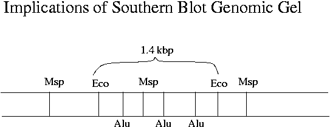
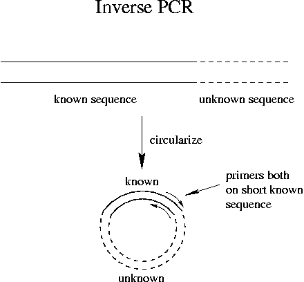

Day 14 Morning Lecture Notes
Steve Williams, Smith College
June 19, 2004

The lengths of Southern blot digest fragments give clues about the location of restriction sites in a particular gene. There must be at least one Msp site within RevT, as otherwise the RevT probe would not hybridize to lower-MW bands of the Msp digest. The difference between Hpa and Msp (isoschizomers with the same recognition site) shows that mouse RevT is heavily methylated. Methylated genes are expressed less heavily, which certainly makes sense for RevT.
Once lambda DNA gets methylated, one strand stays methylated, which is enough to protect it against restriction enzymes. The extra stability of this dsDNA allows enough time for the other strand to be methylated, so lambda starts to reproduce quickly since restriction enzymes can't attack it once its DNA is methylated.
The source of methyl groups is methionine whose dietary source is folic acid. DNA methylation can be prevented by a diet low in methionine. E. coli can grow in a medium which supplies only glucose, biotin and salts.
Some EcoR1-cut mouse DNA that was sequenced was not cut at the two EcoR1 sites that are closest to the RevT gene but was cut at a different EcoR1 site. The EcoR1 site close to RevT should be present downstream in these sequences. As long as RevT occurs somewhere in the sequence, the plaque will still be positive.
Unincorporated fluorescent ddNTP*s run at a particular MW and line up in sequences. This is not surprising since the dyes are such large molecules. The error rate in PCR copying is only 1-2x10-5. "Proofreading" polymerases will recognize an error and correct it. Taq is not a proofreading polymerase and has a slightly higher error rate but also has a higher processivity.
Targeted deletions can be used to study how promoters work and to change amino acids in a protein. Targeted deletions or additions work by intentionally using a slightly incorrect sequence as a PCR primer. To change the middle of a long gene far from where the primers must be, cut out the middle of the gene. Mutate the excised segment, then paste it back in using restriction enzymes.
To see if a particular protein binds to a particular sequence, try an affinity column. Or try a gel affinity assay to see if adding the protein to DNA shifts its band. The band can be cut from DNA and analyzed to confirm protein-DNA binding.
Inverse PCR is a technique that uses the known sequence of a gene to learn sequence of the surrounding material. The PCR primers are both derived from the sequence of the surrounding known material.

"Long" PCR from Applied Biosystems used 2 polymerases in the same tube to get longer chains. One is a proofreading enzyme and one is a more processive enzyme that does not proofread. The processivity of Taq polymerase is about 10 bp. Multiple Taqs will process a given strand during extension.
Up Previous